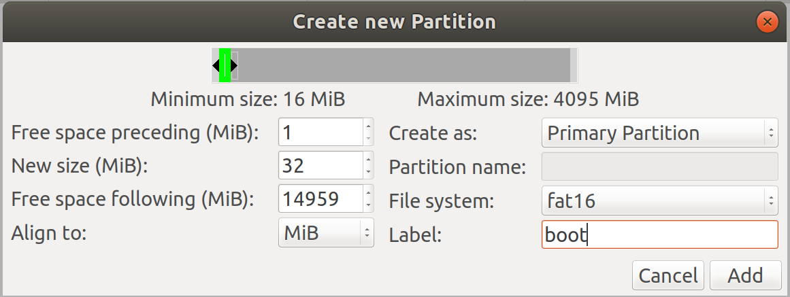
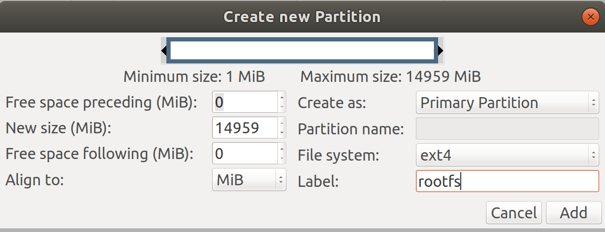
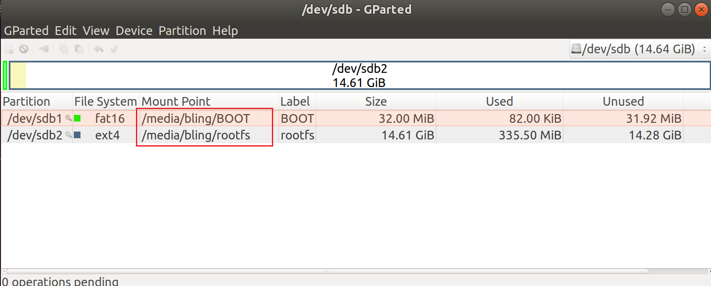
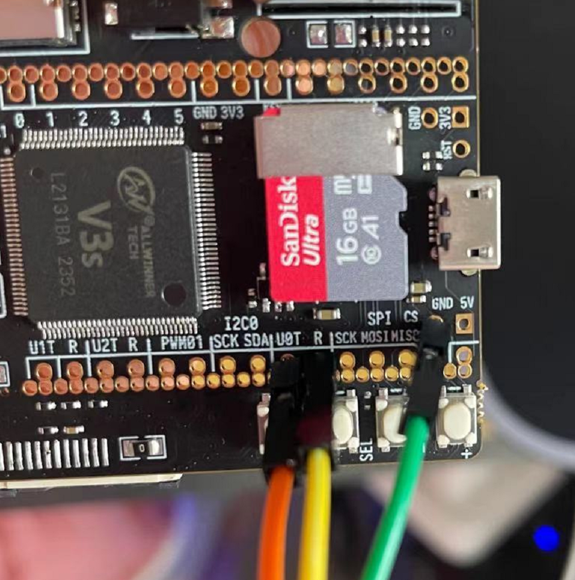
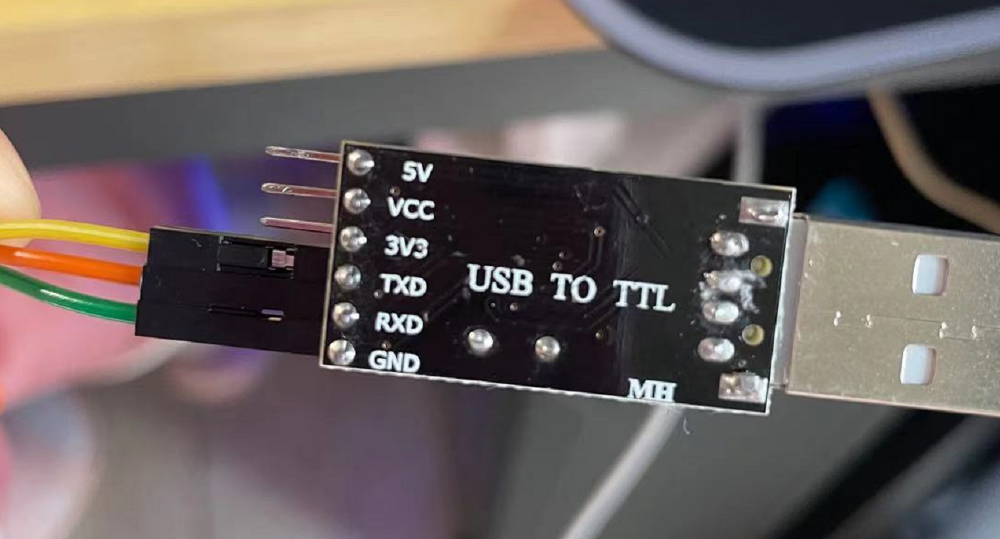
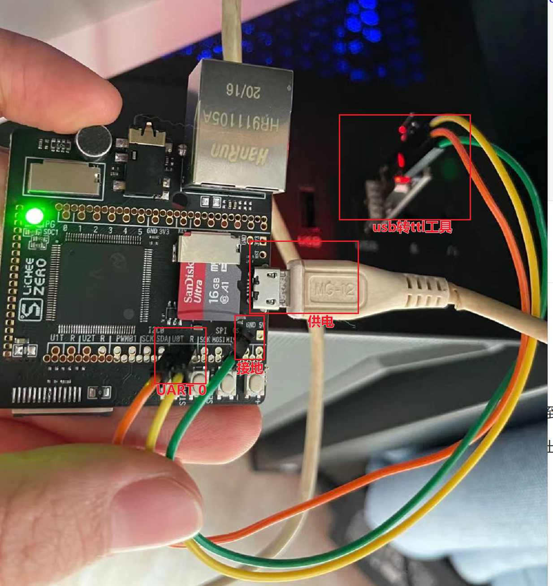
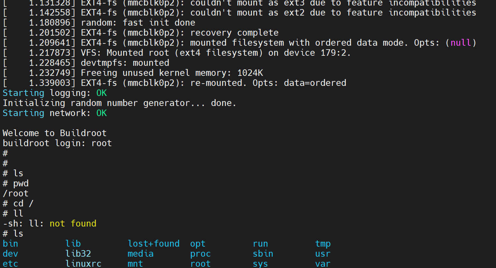

关于荔枝派zero是什么，可以通过以下链接去了解。
这篇文章主要记录第一次在荔枝派zero上烧写镜像的过程。下面列出的是本次做实验需要用到的硬件和工具：
淘宝Sipeed官方店
SD卡。（我用的16G的）
读卡器。（将镜像写入SD卡中）
usb转串口工具。（这种类型的
公对母杜邦线。
还有其他做硬件必不可少的工具，如万用表、电烙铁焊接套餐、各种公母杜邦线等等。（虽然这次试验没有都用上，但如果决定学习底层硬件原理的话，是需要都准备上的）
下面进入正题。
首先，使用别人制作好的镜像烧入sd卡中，来测试板子是否能正常使用。
之后，尝试自己编译uboot、linux kernel、文件系统，并将其写入到sd中，用于启动zero。
这一节参考了荔枝派 zero(全志V3S)-编译及SD烧录
主要步骤如下
将镜像 下载到本地，解压后可以看到lichee_zero-brmin_alpha.dd这个文件。
使用SD Card Formatter
使用Win32 Disk Imager
将上述烧好的SD卡插入zero的sd卡插槽中。
将显示屏通过FPC 40连接到zero上，用于查看启动时的输出。
使用usb otg给zero供电。这时就可以看到屏幕中打印启动log了。
以上，证明我们的板子和操作是木有问题的，下面就让我们从源码开始构建一个zero的镜像吧！
这节内容参考了荔枝派官方文档
安装依赖
1 2 sudo apt install gcc-6-arm-linux-gnueabihf sudo apt-get install device-tree-compiler
为了适配Makefile，将以上安装的arm-linux-gnueabihf-gcc-6创建一个软链接
1 2 3 4 5 6 7 8 cd /usr/bin sudo ln -s ./arm-linux-gnueabihf-cpp-6 ./arm-linux-gnueabihf-cpp sudo ln -s ./arm-linux-gnueabihf-gcc-ar-6 ./arm-linux-gnueabihf-gcc-ar sudo ln -s ./arm-linux-gnueabihf-gcc-nm-6 ./arm-linux-gnueabihf-gcc-nm sudo ln -s ./arm-linux-gnueabihf-gcc-ranlib-6 ./arm-linux-gnueabihf-gcc-ranlib sudo ln -s ./arm-linux-gnueabihf-gcov-6 ./arm-linux-gnueabihf-gcov sudo ln -s ./arm-linux-gnueabihf-gcov-dump-6 ./arm-linux-gnueabihf-gcov-dump sudo ln -s ./arm-linux-gnueabihf-gcov-tool-6 ./arm-linux-gnueabihf-gcov-tool
下载uboot源码并修改配置文件sun8i.h
1 2 3 4 5 6 7 8 9 git clone https://github.com/Lichee-Pi/u-boot.git -b v3s-current cd u-boot # 修改include/configs/sun8i.h，使u-boot可以从tf卡启动。添加以下内容： # define CONFIG_BOOTCOMMAND "setenv bootm_boot_mode sec; " \ "load mmc 0:1 0x41000000 zImage; " \ "load mmc 0:1 0x41800000 sun8i-v3s-licheepi-zero-dock.dtb; " \ "bootz 0x41000000 - 0x41800000;" # define CONFIG_BOOTARGS "console=ttyS0,115200 panic=5 rootwait root=/dev/mmcblk0p2 earlyprintk rw vt.global_cursor_default=0"
改完sun8i.h后，执行编译
1 2 3 make ARCH=arm CROSS_COMPILE=arm-linux-gnueabihf- LicheePi_Zero_800x480LCD_defconfig make ARCH=arm menuconfig time make ARCH=arm CROSS_COMPILE=arm-linux-gnueabihf- 2>&1 | tee build.log
编译完成后，将在当前目录下生成u-boot-sunxi-with-spl.bin。这个二进制文件将被烧到8k位置用于启动。
下载linux源码并编译
1 2 3 4 5 6 git clone https://github.com/Lichee-Pi/linux.git cd linux make ARCH=arm licheepi_zero_defconfig make ARCH=arm menuconfig make ARCH=arm CROSS_COMPILE=arm-linux-gnueabihf- -j4 # 编译内核，目标文件为./arch/arm/boot/zImage make ARCH=arm CROSS_COMPILE=arm-linux-gnueabihf- dtbs # 编译设备树，目标文件为./arch/arm/boot/dts/sun8i-v3s-licheepi-zero-dock.dtb
安装依赖
1 sudo apt-get install linux-headers-$(uname -r)
下载源码并编译
1 2 3 4 5 6 7 8 9 10 11 12 13 14 15 16 17 18 19 20 21 22 23 24 25 26 27 wget https://buildroot.org/downloads/buildroot-2017.08.tar.gz tar xvf buildroot-2017.08.tar.gz cd buildroot-2017.08/ make menuconfig # 这里，在menuconfig中需要配置一些参数,如下 # # Target Architecture (ARM(little endian)) ---> # Target Binary Format (ELF) ---> # Target Architecture Variant (cortex-A7) ---> # Target ABI (EABIhf) ---> # Floating point strategy (VFPv4) ---> # ARM instruction set (ARM) ---> # # Toolchain type (External toolchain) ---> # *** Toolchain External Options *** # Toolchain (Linaro ARM 2017.02) # Toolchain origin (Toolchain to be downloaded and installed) ---> # [ ] Copy gdb server to Target # *** Host GDB Options *** # [ ] Build cross gdb for the host # [ ] *** Toolchain Generic Options *** # [ ] Copy gconv libraries # [*] Enable MMU support # ( ) Target Optimizations # ( ) Target linker options # [ ] Register toolchain within Eclipse Buildroot plug-in # make # 完成后会生成./output/images/rootfs.tar，这就是我们需要的根文件系统
将以上三步生成的四个文件拷贝到一块，便于进行后续步骤
1 2 3 4 5 6 7 8 bling@Ubuntu1804:~/lichee/sdcard$ ll total 9612 drwxr-xr-x 2 bling bling 4096 3月 7 15:46 ./ drwxr-xr-x 6 bling bling 4096 3月 6 22:41 ../ -rw-r--r-- 1 bling bling 5601280 3月 6 22:41 rootfs.tar -rw-r--r-- 1 bling bling 9262 3月 6 22:41 sun8i-v3s-licheepi-zero-dock.dtb -rw-r--r-- 1 bling bling 398407 3月 6 22:42 u-boot-sunxi-with-spl.bin -rwxr-xr-x 1 bling bling 3813392 3月 6 22:42 zImage*
将SD卡接入Ubuntu中，在Ubuntu中打开GParted分区编辑器
在GParted界面的右上角可以切换磁盘设备，我的SD卡对应的是/dev/sdb。
删除SD卡上的所有分区，使之成为一个未分配的磁盘。（记得点击上方绿色的“勾”，使更改生效）
然后，创建第一个分区，为FAT16格式

再，创建第二个分区，为EXT4格式

最后，记得点击上方绿色的“勾”，使更改生效！！然后拔掉读卡器，再重新插到电脑上，就可以看到fat16和ext4分别挂载到了/media/bling/目录下

分区完成后，就可以将uboot，内核文件，dts文件以及根文件系统写入SD卡了！
1 2 3 4 5 6 7 8 9 10 11 # 1.使用dd命令将uboot镜像写到8k位置处 sudo dd if=u-boot-sunxi-with-spl.bin of=/dev/sdb bs=1024 seek=8 # 确认uboot bin文件是否写去入磁盘中，这条可不执行 # sudo dd bs=1024 count=2000 if =/dev/sdb of=./test1.bin # 2.将dtb和zImage拷贝进fat16分区 cp sun8i-v3s-licheepi-zero-dock.dtb /media/bling/BOOT/ cp zImage /media/bling/BOOT/ # 3.将文件系统rootfs.tar文件解压并拷贝进ext4的分区 sudo tar xvf rootfs.tar -C /media/bling/rootfs/
这样就完成SD卡的制作了。
让我们试试这些镜像能不能正常运行吧！
还需要做几件事情：
将上述烧好的SD卡插入zero的sd卡插槽中。
在电脑上查看串口输出：需要将荔枝派的UART0 的 TX 和 RX 分别连接到“usb转ttl工具”的 RX 和 TX处，并将“usb转ttl工具”接地。


使用usb otg给zero供电。这时就可以在电脑端串口工具中查看串口输出了。

启动完成后，使用root登录系统！

通过以上实验，确定了自己编译的镜像是可以在荔枝派zero上启动并运行操作系统的。所以接下来的计划是，深入学习uboot、kernel和文件系统这三个部分，理解从启动到系统运行的每一个过程和涉及的东西。希望最后能定制一个自己的系统出来~